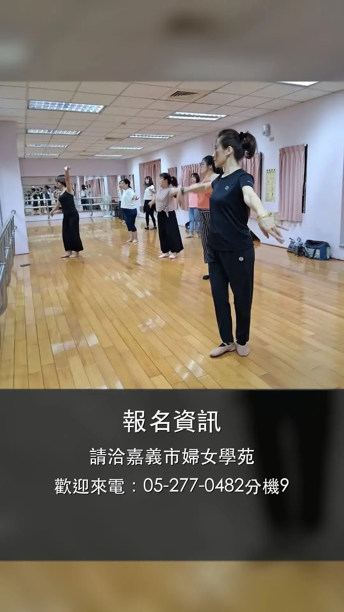
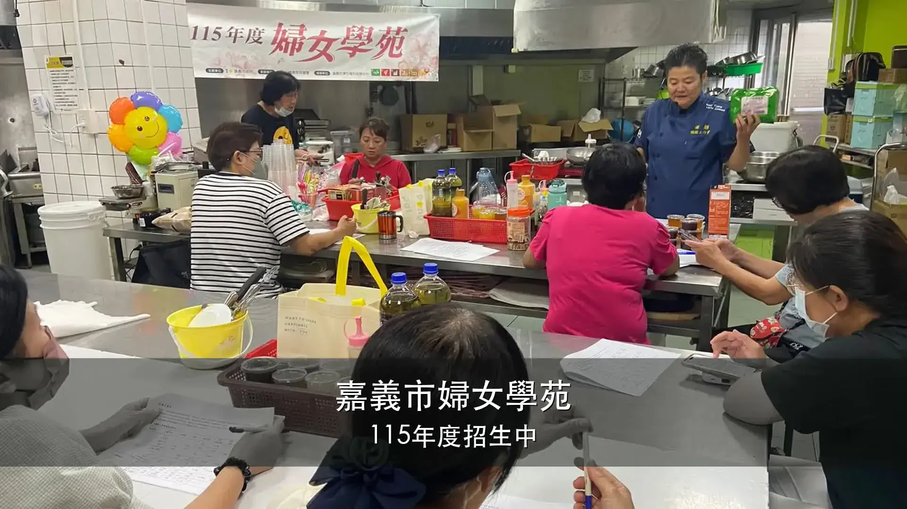

AI 問診室
原本設計是練習卡關時先問 AI，但當日實際以 Codex 影片製作作為大型問診案例。
C08 | 2026.06.23
第八堂原本規劃 AI 問診室，實際上課改成 Codex 實作：讀取婦女學苑照片資料夾、生成橫式與手機直式招生影片、修正字幕與電話、輸出主管審閱分鏡文件，再把流程整理成可重複使用的 Skill。
原本設計是練習卡關時先問 AI，但當日實際以 Codex 影片製作作為大型問診案例。
從照片資料夾產出橫式、手機直式、活潑版影片，並做分鏡文件與修改說明。
影片不是一次就完美，重點是描述問題、請 AI 修改，再把成功流程保存成 Skill。
Production Pipeline
這裡把第八堂的製片流程做成互動產線。點不同階段，看看 Codex 實際做了什麼、產出了什麼。
Codex 能讀取與操作檔案，所以一開始就要把素材放進清楚的專案資料夾，讓它只在這個範圍工作。
產出：可控的工作範圍，避免誤動其他檔案。Video Results
第八堂不只是示意，資料夾內真的產出了多個版本。這裡用單一播放器切換橫式、手機直式、活潑版，避免一次載入太多影片。
Revision Room
第一版直式影片不是完美：缺電話、照片太小、字幕不夠大。第八堂示範的是把模糊感受改寫成 AI 能執行的修改任務。

感覺怪怪的：最後一幕好像少了可以報名的資訊。
可修改指令：直式影片最後一幕沒有電話資訊，請加入 05-277-0482 分機 9。Storyboard Review
Codex 讀取影片後，產生分鏡文件：每段時間、截圖、字幕、目前目的、主管修改意見欄位。這讓影片變成可討論的文件。

用課程畫面開場，讓觀眾立刻知道這是婦女學苑招生影片。
可確認年度、單位名稱與開場照片是否適合。
Skill Builder
第八堂最有價值的地方，是把影片流程整理成「使用說明書」。下次換一批照片，不必從零開始。
Skill 不是魔法，而是一份工作說明書。輸入條件越清楚，下次套用時越不容易跑偏。
課堂結論：把成功流程保存下來，才是 AI 工作術的價值。AI Troubleshooting
第八堂保留了原教案「AI 問診」精神：不是沒有問題，而是把問題截圖、描述、追問，讓 AI 協助排除。
把 Windows 安裝 Codex 的錯誤畫面丟給 AI，說明你想安裝什麼、卡在哪一步。
照片放大卡卡，可能和解析度、比例、幀率與縮放方式有關，可請 AI 逐項診斷。
重要討論結束前，請 AI 整理目標、結論、卡關與下一步，下次再貼回去接續。
Quick Check
確認第八堂的核心：Codex 資料夾、影片修改、分鏡文件、Skill、AI 問診與長對話整理。